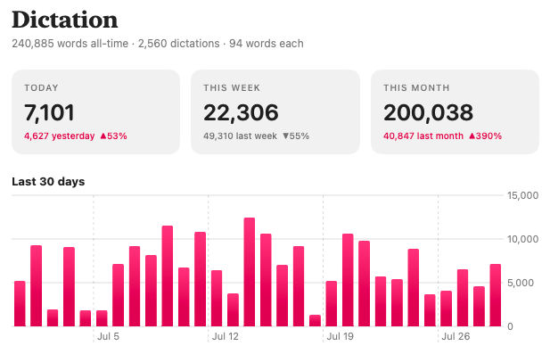
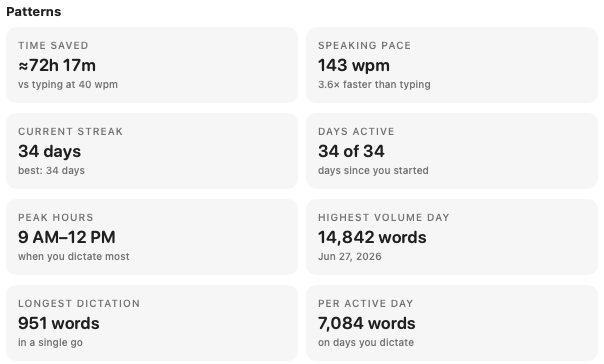

How it works
There is no window to open and no button to find. Loqui sits in the menu bar and waits for one key.
Hold
Push to talk
Hold your shortcut, say the thing, let go. The text is pasted the moment you release, like a walkie talkie.
Tap
Or go hands free
Tap once to start and keep talking for as long as you like. Tap again when you are done and it lands.
Done
It appears where you are
Straight into whatever app has your cursor. If there is nowhere to paste, it goes to the clipboard rather than vanishing.
See it working
Loqui keeps count of what you dictate, so the time it saves is a number you can look at rather than a claim on a website.


What it does
Small on purpose. Every one of these earns its place because it removes a step you would otherwise do yourself.
It tidies as you speak
The ums and you knows come out, sentences get their capitals and full stops back, and what lands is text you can send rather than a transcript you have to edit.
It learns your vocabulary
Client names, product names, the jargon your industry insists on. Add them once to the dictionary and Loqui stops mangling them.
There is no lag
Transcription runs on your Mac, so there is no upload, no queue and no spinner while a server thinks about it. You stop talking and the words are there.
It remembers, if you want
A local history of everything you have dictated, with a Recent menu for grabbing something again. Keep it forever, keep it a week, or switch it off entirely.
It stays out of the way
One glyph in the menu bar that pulses while it is listening. No dock icon, no window in your way, nothing to close.
Nothing to sign into
No account, no subscription, no trial that expires. Download it and it works, this year and in five years.
Your voice never leaves your Mac
This is the part worth being specific about, because every claim here can be checked against the source.
- Transcription happens on device. Loqui uses the speech engine already built into macOS. No audio is uploaded, because there is no server to upload it to.
- One network request exists. Checking this site for a newer version. That is the only connection in the codebase, and you can grep for it.
- No analytics, telemetry or crash reporting. Not anonymised, not aggregated, not optional. There is none.
- Your history stays on your disk. Stored in your own Application Support folder in plain text, with retention you control, including off. Deleting it in the app deletes it.
- Logs never contain your words. Diagnostics record events and word counts, never what you said.
Why it exists
I kept seeing people who build genuinely complicated things pay a monthly fee for dictation. It puzzled me. The Mac already has a speech engine, a global hotkey is not hard, and pasting at the cursor is a solved problem. So I built the version I wanted instead, and I have used it every day since.
It turned out better than the thing I was avoiding paying for. It is faster, because nothing leaves the machine. It costs nothing to run, because there is no service behind it. And I stopped thinking about how much I was transcribing, because there was no meter running.
It is open source so you can read every line, check the privacy claims yourself, and build it in one command if you would rather not trust a download.
Install it
Signed and notarised by Apple, so it opens without the right click routine.
Or build it yourself. No Apple developer account needed, just Xcode.
git clone https://github.com/jameslaws/loqui.git
cd loqui
./install.shmacOS will ask for two permissions on first use. Accessibility lets Loqui notice your shortcut anywhere and paste at the cursor. Microphone lets it hear you. Both are required, and neither sends anything anywhere.